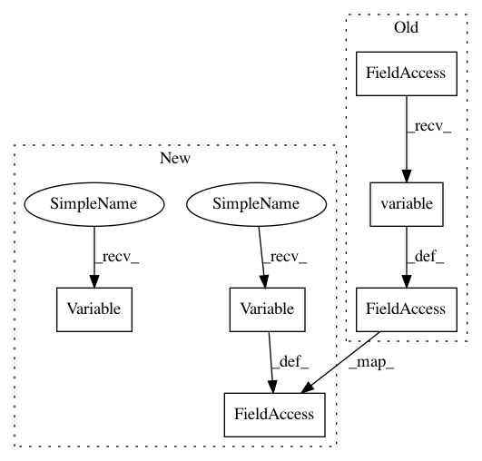

cffd5df804e8c1405adfc6616bad2253fe5825b0,snntoolbox/simulation/backends/inisim/ttfs_dyn_thresh.py,SpikeDense,build,#SpikeDense#Any#,416
Before Change
Dense.build(self, input_shape)
self.init_neurons(input_shape)
self._kernel = k.variable(k.zeros_like(self.kernel))
self._bias = k.variable(k.zeros_like(self.bias))
@spike_call
def call(self, x, **kwargs):
After Change
Dense.build(self, input_shape)
self.init_neurons(input_shape)
self._kernel = tf.Variable(lambda : tf.zeros_like(self.kernel))
self._bias = tf.Variable(lambda : tf.zeros_like(self.bias))
@spike_call
def call(self, x, **kwargs):
In pattern: SUPERPATTERN
Frequency: 3
Non-data size: 6
Instances
Project Name: NeuromorphicProcessorProject/snn_toolbox
Commit Name: cffd5df804e8c1405adfc6616bad2253fe5825b0
Time: 2020-05-02
Author: bodo.rueckauer@gmail.com
File Name: snntoolbox/simulation/backends/inisim/ttfs_dyn_thresh.py
Class Name: SpikeDense
Method Name: build
Project Name: NeuromorphicProcessorProject/snn_toolbox
Commit Name: 2a64a9d6d97a5c203bd58c0d039eb7e63c07e80f
Time: 2020-09-28
Author: bodo.rueckauer@gmail.com
File Name: snntoolbox/simulation/backends/inisim/ttfs.py
Class Name: SpikeLayer
Method Name: init_neurons
Project Name: NeuromorphicProcessorProject/snn_toolbox
Commit Name: cffd5df804e8c1405adfc6616bad2253fe5825b0
Time: 2020-05-02
Author: bodo.rueckauer@gmail.com
File Name: snntoolbox/simulation/backends/inisim/ttfs_dyn_thresh.py
Class Name: SpikeDense
Method Name: build
Project Name: NeuromorphicProcessorProject/snn_toolbox
Commit Name: cffd5df804e8c1405adfc6616bad2253fe5825b0
Time: 2020-05-02
Author: bodo.rueckauer@gmail.com
File Name: snntoolbox/simulation/backends/inisim/ttfs_dyn_thresh.py
Class Name: SpikeConv2D
Method Name: build